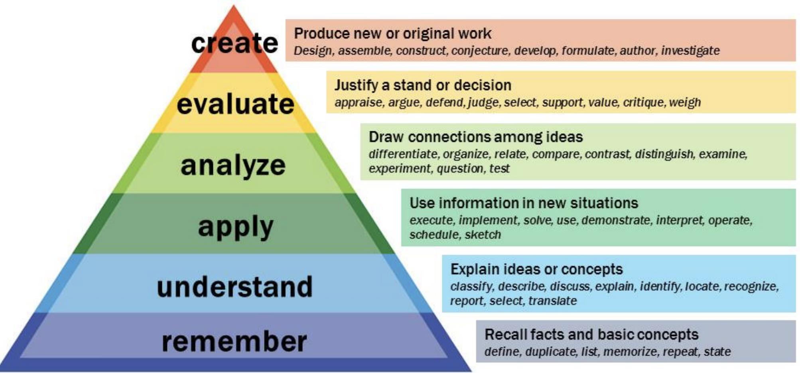

When designing an engaging virtual workshop consider the following principles:
Principle 1: What is your purpose?Start with the end in mind. Ask yourself, "What do I want my participants to think, feel, and do because of this virtual workshop?" Work backward from this endpoint, ensuring every single piece of content, process, activity, action, interaction, slide, click, and question moves participants closer to that outcome. If it doesn't do that, leave it out.
Principle 2: It's not about you—it's all about themEngage early: “It’s easy to get people’s attention. But what counts is getting their interest.” In a world of diminishing attention spans, you must get the attention and interest of participants right away. I always begin with exercises that encourage participant interactions across the group. It signals that they will play an active and important role throughout the event
Want to keep learners engaged? Then remember that the star of the show is each individual participant. Stop asking yourself, "What do I want to say?" and replace that with, "What do participants need to hear?"
If you think about your workshops from the learners' point of view, you can personalize them by working out what activities, stories, and content will resonate with participants. They are much more likely to stay engaged if the story is about them.
To do this, try these techniques:
Design prepared questions and activities into your slides that will help participants drive deeper thinking about their own situations. For example, one slide may say, "Share one example of how you will apply tactic X in your team."
Principle 3: We’re in this togetherHow can we access learners' ideas and experiences? First, set up-front expectations for the participants' responsibility in contributing. Then, fill your workshop with activities that make contributing easy.
Here are a few ideas for encouraging peer-to-peer interaction:
Welcome participants into the workshop in a way that instantly puts them at ease and makes them feel comfortable with you, the group, and the virtual environment.
Much of this comes down to your confidence, but you can build some aspects into the workshop that will help participants understand that they are in safe hands.
Here are a few:
The workshop really starts before it starts. Preworkshop communications, logging in, and welcoming participants should all happen before the official workshop begins. These first impressions are the perfect opportunity for you to put participants at ease and for them to feel good about the process.
Principle 5: SequencingUnlike in face-to-face training programs, you can't just fly through content by the seat of your pants with a flipchart, pens, and sticky notes in a virtual environment. From the beginning to the end, each section needs to follow a logical route with clear links between steps or concepts. To accomplish this and prevent learners from becoming disengaged, ask yourself:
While answering these questions and integrating your responses into your slide deck, keep in mind that timing is critical. Build clear timing into your delivery plan, remembering that most things take a little longer to do in a virtual workshop than in face-to-face settings. A slow start, detailed question, or tech problem can derail a virtual workshop. Make sure you have a plan B in case timing becomes squeezed, including alternative exercises and discussions so the workshop never feels rushed.
Principle 6: SizzlePut the sizzle on your sausage. Flair is how the virtual trainer brings her personality to the session and manages participant energy. So, how can you influence this in a virtual workshop?
Participants often attend virtual workshops expecting them to be one-way lectures or noninteractive sessions. "Maybe I'll have an opportunity to catch up on emails while some virtual trainer lectures on in the background," they think.
Grab participants' attention and demonstrate, rather than tell, how your session will be different, more engaging, interactive, and upbeat than they might expect. Build in interaction as soon as possible by launching a poll, sharing an idea in chat, or clicking an emoji. Have group members speak as soon as they enter the virtual workshop. Build a slide with a shock statistic, thought-provoking question, or list of challenges.
You also should have participants interact in some way every couple of minutes, varying the types of activities to involve participants in different ways. Mix it up with real-life scenarios, whiteboards, posters, polls, breakouts, peer coaching, quizzes, gamification, paired interviews, and video—but always with purpose. Remember, if it doesn't move the participants closer to achieving the purpose of the workshop, then it shouldn't make the cut.
Here are 10 Adult Learning Principles that will help guide your virtual workshop design:
For more information on any of the principles below, please contact Dr. Dan Neundorf (dan@danneundorf.com)
Less is more and more is less. Prepare many more slides than you would for a face-to-face workshop but with much less on each slide. There is no golden rule regarding how many slides—just keep it moving and changing.
Bullets are boring. Don't put whole sentences on your slides and just read them out (unless it is a direct quote). Mix it up with images, SmartArt, charts, and infographics.
Stick to a theme. Choose a font and a color palette and stick to it. Decide on a look for your images so they follow a theme too. For example, you might consider using all black-and-white photos, all illustrations, all business-based images, or all nature pictures.
State the obvious. Give key messages, links between sections, and questions their own slides so participants know this is important information they need to pay attention to.
Create an ABC for process. Create a slide with step-by-step instructions for any activities you want participants to follow or actions you want them to take. This way, what they need to do is always clear.
Ditch the slide number. Don't tell your participants that this is slide 13 of 38. This lets you omit slides if time is tight without participants thinking they may be missing out.
Get help. Find the individuals around you who are great at creating slide decks and use them. Most people are willing to share tips and best practices.
Have fun. Be playful with your quotes and images. Keep it current, fresh, and up-to-date.
A statement that specifies in a measurable way, what the workshop participant will know, value or be able to do by the end of the workshop.
Consider the following questions for Learning Outcome Statements| Stem | Action Verb | Learning Statement |
|---|---|---|
|
|
|
| Example: “By the end of this workshop, participants will be able to…” | Example: “illustrate, define, compare, arrange, create, indicate, coordinate, evaluate…” | Example: “By the end of this workshop, participants will be able to identify the 6 components of the virtual workshop design framework.” |
Consider Bloom’s Cognitive Model in understanding what you want to achieve (higher order thinking vs. lower order thinking) for workshop participants:
 Step 3: Pre-Assess What trainer finds out?| Step | Resources | Time |
|---|---|---|
| Opening |
||
| Outcomes |
||
| Pre-Assess |
||
| Interactive Learning |
||
| Post-Assess |
||
| Summary |
Feedback Form (Phase 1):
Team Member Perceptions (Phase 1a)
Team Member is queried in a way that reveals insights related to learning effectiveness.
Examples: Measures that target Team Member Comprehension, Realistic Practice, Team Member Motivation to Apply, After-Learning Support, etc.
Such measures can hint at outcomes but should be augmented with objective outcome measures (Phases 2 -5)
Knowledge (Phase 1b)
Team Member answers questions about facts/terminology.
Knowledge Recitation—during or right after learning event.
Usually inadequate because knowing terminology does not fully enable performance.
Knowledge Retention—after several days or more.
Usually inadequate because remembering terminology does not fully enable performance.
Decision Making Competence (Phase 2)
Team Member makes decisions given relevant realistic scenarios
Decision Making Competence—during or right after learning event.
Not a fully adequate metric because Team Members may forget decision making competencies.
Remembered Decision Making Competence—after several days or more.ADEQUATE TO CERTIFY DECISION MAKING COMPETENCE.
Task Competence (Phase 3)
Team Member performs relevant realistic actions and decision making.
Task Competence—during or right after learning event.
Not a fully adequate metric because Team Members may forget their task competencies.
Remembered Task Competence—after several days or more. ADEQUATE TO CERTIFY TASK COMPETENCE.
NOTE: “Tasks” comprise both decision making and action taking.
Learning Transfer (Phase 4)
When Team Member uses what was learned to perform work tasks successfully— as clearly demonstrated through objective measures.
Assisted Transfer—when performance is substantially prompted/supported. ADEQUATE TO CERTIFY ASSISTED TRANSFER.
Full Transfer—when Team Member demonstrates full agency in applying the learning. ADEQUATE TO CERTIFY FULL TRANSFER.
Effects of Learning Transfer (Phase 5)
Including outcomes affecting (a) learners, (b) coworkers (c) organization, (d) customers
CERTIFYING EFFECTS OF TRANSFER REQUIRES: Certification of transfer plus a rigorous method of assessing transfer’s causal impact—including positive and negative effects.
Purpose of Feedback Forms:
Determine whether learning has created a pre-cursor to on the job performance… then 4 Pillars
Note: learners have been inoculated (while in training) to the obstacles they might face, whether they’ve been given sufficient practice (while in training) regarding what can go wrong and what to do
The TPS procedure:
1. Give participants a question that requires them to solve a problem
2. Ask individuals to plan out the method step-by-step to solving the problem
3. Instruct participants to form groups of two or three to compare each other’s methods.
4. Let them discuss and make any necessary changes
5. Now, have them work together to actually solve the problem
6. Invite everyone back together as a large group and ask for volunteers or randomly
7. Choose a few pairs to give a brief summary of their answers
| Opening: |
|
| Outcomes: |
|
| Pre-Assess: |
|
| Learning: |
|
| Post-Assess: |
|
| Summary: |
|